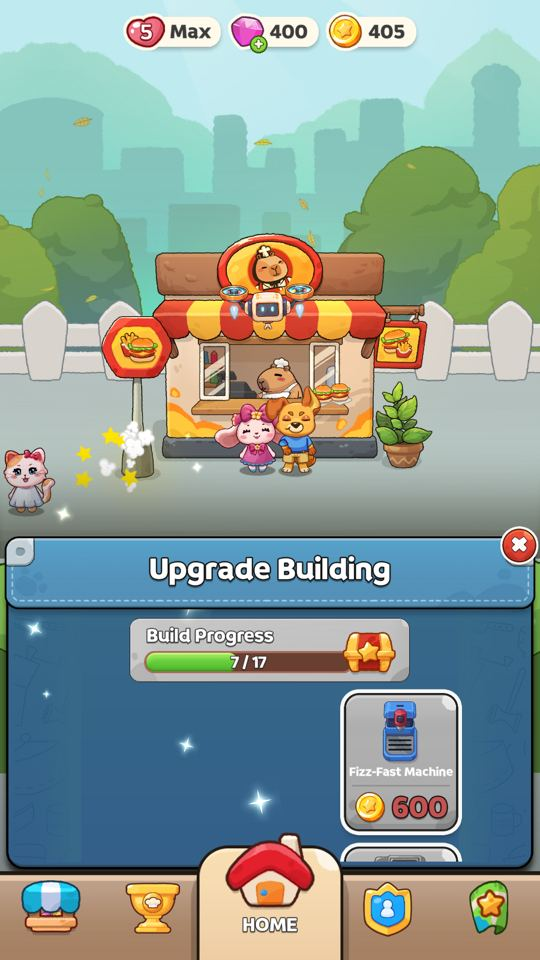
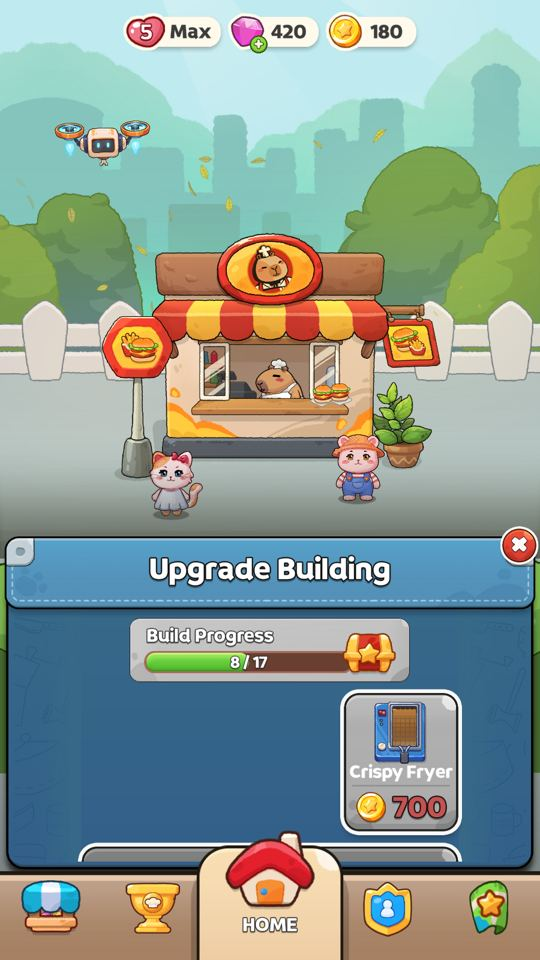
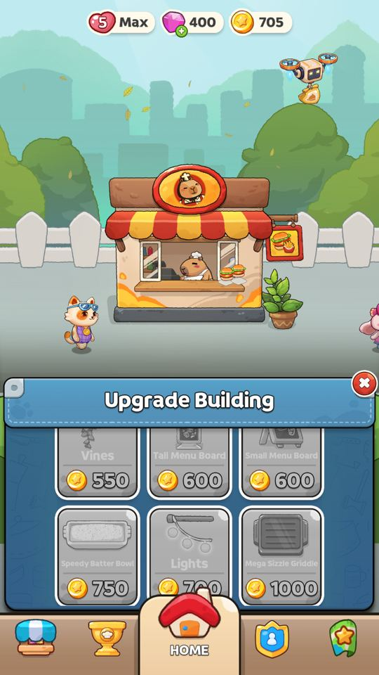

Nâng cấp nhà hàng và dụng cụ
Mô tả
- Người chơi dùng coin (tiền kiếm ở level) để mua món nâng cấp cho từng nhà hàng: trang trí (biển, mái, đèn...), dụng cụ nấu nhanh hơn (máy nước, chảo, chiên...) và nhà to hơn. Mỗi map có 28-39 món.
- Món xếp thành 3 nhóm (base) x 3 chuỗi song song: trong mỗi chuỗi phải mua đúng thứ tự, mua hết các chuỗi của nhóm thì mở base kế tiếp (Bigger House, Giant Burger...). Base cuối là mốc thưởng: 100 gem + booster.
- Món dụng cụ nâng level dụng cụ (ảnh hưởng trong màn chơi, popup "TOOL UPGRADED!"). Giá tăng dần, burger tổng 27 200 coin; coin kiếm ~190-515/level nên nâng cấp luôn là mục tiêu kinh tế kế tiếp.
- Bản 1.15 thêm
BuildingUpgradeRewardRemoteConfig: thưởng mốc đặt qua RC (chu kỳ 4 mục theo thứ tự map) thay vì chỉ trong prefab.
Thiết kế chi tiết
Tóm tắt thiết kế
- Code Cấu trúc 3 nhóm base x 3 chuỗi song song: người chơi chọn thứ tự giữa 3 chuỗi nhưng trong chuỗi bị ép thứ tự; mua hết nhóm thì mở base kế.
- Code Mốc thưởng = base của nhóm cuối; các món sau mốc (toàn dụng cụ cấp 3-5) là "đuôi" để cày, thưởng riêng khi sở hữu hết.
- Code Món dụng cụ nâng level dụng cụ đúng bằng số món Tool đã mua của dụng cụ đó; nâng cấp cũng là tăng sức mạnh trong màn chơi.
- Code 1.15 thêm thưởng mốc qua RC theo chu kỳ 4 map: LastBase luôn 100 gem, LastItem xoay 2 trong 4 loại booster.
- Playtest Giá 300-1000 coin, coin kiếm 190-515/level: mỗi món cần 1-5 level; Bigger House (1000) cần ~3 level.
- Nhận định Tổng 27-40 nghìn coin/map so với 30 Day đầu: người chơi không thể mua hết trước khi sang map kế; hệ thống bù coin lần đầu để chạm mốc.
Luồng người chơi từng bước
- Nhận base miễn phíHệ thống CodeMở map -> món "base" vào
boughtPartIds. - Mở panel nâng cấpNgười chơi PlaytestBấm rương 6/17; thấy món mua được và món xám.

Home Day 13: rương "6/17" có chấm "!" ở góc phải dưới nút Day (bản 1.15, 16/11) 
Panel Upgrade Building: Build Progress 6/17, Pole Sign 300 và Fizz-Fast Machine 600 coin - Mua món trang tríNgười chơi PlaytestPole Sign 300 coin: coin bay, biển hiện cạnh quán, Build 7/17.

Sau khi mua Pole Sign: coin 705 -> 405, Build 7/17, Fizz-Fast 600 chữ đỏ - Mua món dụng cụNgười chơi PlaytestFizz-Fast Machine 600 coin -> popup TOOL UPGRADED!.

Popup TOOL UPGRADED!: "Fizz-Fast Machine is now faster", nút Awesome 
Sau popup: Build 8/17, tiếp theo Crispy Fryer 700 (thiếu coin) - Mua base mớiNgười chơi PlaytestBigger House 1000 coin: nhà to hơn, mở nhóm 2.

Mua Bigger House 1000 coin: Build 10/17, quán đổi thành nhà to hơn - Đạt mốc và nhận thưởngNgười chơi CodeMua Giant Burger 1800 -> rương claimable -> nhận 100 gem; map 2 hết khoá nâng cấp.
- Mua nốt đuôi dụng cụNgười chơi Code14 món dụng cụ cấp 3-5, nhận thưởng "all items".


Topology burger: 3 nhóm x 3 chuỗi (Code, APK)
| Nhóm / base | Chuỗi 1 | Chuỗi 2 | Chuỗi 3 |
|---|---|---|---|
| 1: base (miễn phí) | Hanging Sign 300 -> Speedy Chopper 450 (T) -> Pole Sign 300 | Sizzle Griddle 550 (T) -> Canopy 400 -> Logo Board 400 | Plant Pot 450 -> Fizz-Fast Machine 600 (T) -> Crispy Fryer 700 (T) |
| 2: Bigger House 1000 | Vines 550 -> Speedy Batter Bowl 750 (T) | Tall Menu Board 600 -> Lights 700 | Small Menu Board 600 -> Mega Sizzle Griddle 1000 (T) |
| 3 (mốc): Giant Burger 1800 | Cola Geyser 1000 -> Cola Volcano 1150 -> Volcano Griddle 1100 -> Infinite Fizz Fountain 1250 -> Legendary Sun Griddle 1200 | Flour Frenzy Bowl 1050 -> Golden Fryer 1050 -> Flour Blizzard 1150 -> Turbo Fryer 1150 -> Golden Dust Bowl 1250 -> Legendary Fry Reactor 1250 | Ninja Chopper 1050 -> Samurai Chopper 1150 -> Legendary Blade Board 1250 |
(T) = món dụng cụ. Giá coin lấy từ _itemConfigs trong UpgradeConfig-burger.prefab; tên từ UpgradePart-burger-*.asset, khớp bảng giá thấy khi chơi.
Số món và giá theo map (Code, APK; tính từ Data/maps)
| Map | Tổng món (gồm base đầu) | Món tới mốc (không tính base đầu) | Coin tới mốc | Tổng coin | Món dụng cụ | Số dụng cụ |
|---|---|---|---|---|---|---|
| Burger Stall (burger) | 32 | 17 | 11 150 | 27 200 | 20 | 5 |
| Coffee & Bakery (coffee) | 32 | 17 | 14 200 | 36 600 | 20 | 5 |
| Sushi & Sashimi (sushi) | 39 | 20 | 15 000 | 31 450 | 24 | 6 |
| Pasta House (pasta) | 29 | 14 | 15 250 | 31 650 | 20 | 5 |
| Ice Cream Parlor (icecream) | 33 | 20 | 15 300 | 33 200 | 20 | 5 |
| Sandwich Deli (sandwich) | 34 | 19 | 15 650 | 35 450 | 20 | 5 |
| Hot Tteokbokki (tteokbokki) | 33 | 18 | 16 100 | 35 000 | 20 | 5 |
| Seafood Shack (seafood) | 28 | 17 | 15 700 | 34 050 | 16 | 4 |
| Dimsum (dimsum) | 31 | 17 | 15 900 | 34 550 | 20 | 5 |
| Pizza (pizza) | 32 | 18 | 18 200 | 39 500 | 20 | 5 |
| Bento (bento) | 35 | 19 | 15 800 | 34 300 | 24 | 6 |
"Món tới mốc" = 3 base + món chuỗi của các nhóm trừ nhóm cuối, trừ 1 (base miễn phí, khớp UI "x/17" của burger; suy luận cho map khác). Croissant chưa có topology.
Thưởng mốc / all items theo prefab từng map (APK)
| Map | _rewardFullUpgrade (prefab) | _rewardAllItems (prefab) |
|---|---|---|
| burger | hard x100 + booster_ingredient_pick x1 | booster_shift_up_row x1 + booster_auto_cook x1 |
| coffee | hard x100 + booster_shift_up_row x1 | booster_ingredient_pick x1 + booster_auto_cook x1 |
| sushi | hard x100 + booster_auto_cook x1 | booster_ingredient_pick x1 + booster_shift_up_row x1 |
| pasta | hard x100 + booster_ingredient_pick x1 | booster_shift_up_row x1 + booster_auto_cook x1 |
| icecream | hard x100 + booster_shift_up_row x1 | booster_ingredient_pick x1 + booster_auto_cook x1 |
| sandwich | hard x100 + booster_auto_cook x1 | booster_ingredient_pick x1 + booster_shift_up_row x1 |
| tteokbokki | hard x100 + booster_shift_up_row x1 | booster_ingredient_pick x1 + booster_auto_cook x1 |
| seafood | hard x100 + booster_ingredient_pick x1 | booster_shift_up_row x1 + booster_auto_cook x1 |
| dimsum | hard x100 + booster_auto_cook x1 | booster_ingredient_pick x1 + booster_shift_up_row x1 |
| pizza | hard x100 + booster_shift_up_row x1 | booster_ingredient_pick x1 + booster_auto_cook x1 |
| bento | hard x100 + booster_ingredient_pick x1 | booster_shift_up_row x1 + booster_auto_cook x1 |
RC building_upgrade_reward_config (4 mục chu kỳ) được GetGlobalReward ưu tiên khi singleton tồn tại; prefab là dự phòng.
Log mua trong playtest 16/11 (Playtest)
| Món | Giá coin | Coin trước -> sau | Build |
|---|---|---|---|
| Pole Sign | 300 | 705 -> 405 | 6/17 -> 7/17 |
| Fizz-Fast Machine (TOOL UPGRADED) | 600 | 780 -> 180 | 7/17 -> 8/17 |
| Crispy Fryer (TOOL UPGRADED) | 700 | 940 -> 240 | 8/17 -> 9/17 |
| Bigger House | 1000 | 1 600 -> 600 | 9/17 -> 10/17 |
Nguồn: RESULTS_LIVE.md mục 4b và ảnh trong thư mục BuildingUpgrade.
Vận dụng cho game khác
- Dùng chuỗi song song có thứ tự cho hệ thống nâng cấp: người chơi vẫn có lựa chọn nhưng luôn có "món kế" rõ ràng để nhắm tới.
- Đặt mốc thưởng giữa chừng (base cuối) và để "đuôi" nội dung sau mốc cho người chơi muốn cày; có thưởng riêng cho đuôi.
- Đưa thưởng mốc ra remote config theo chu kỳ map để cân kinh tế (gem/booster) không cần bản mới.
Bảng tổng hợp mọi tính năng đã làm chi tiết: FoodiePop_ThietKeChiTiet.xlsx.
Mở khóa & điểm vào
Có từ map 1 (CakeMapSO.allowUpgrade = 1; map nhận base miễn phí qua MapUpgradeConfig.EnsureFirstBaseGranted). Map k chỉ nâng cấp được khi map k-1 đã đạt mốc (PlayerMapLevelProgressDataAccess.IsUpgradeLockedByPreviousMap, "Upgrade {0} to its final stage first!"). Croissant có allowUpgrade = 0.
Điểm vào:
- Rương "Build x/17" ở góc phải Home (
UIMapBuildingProgress), mở panel Upgrade Building - Thẻ trong panel (
UIItemUpgradeBuildingOptionCard) bấm để mua - Chấm đỏ "!" trên rương khi đủ coin mua món kế hoặc có thưởng mốc chờ nhận
- Popup "TOOL UPGRADED!" sau khi mua món dụng cụ
Cách hoạt động
- Mở map:
UnlockMap->MapUpgradeConfig.OnMapBuildingUnlocked->EnsureFirstBaseGrantedghi món "base" (giá 0) vàoboughtPartIds. - Bấm rương Home: panel liệt kê
GetUpgradableParts(món kế tiếp của mỗi chuỗi trong nhóm hiện tại); thẻ xanh/cam mua được, chữ giá đỏ khi thiếu coin, thẻ xám còn khoá thứ tự. - Bấm mua:
UIListUpgradeBuildingOptionCards.OnClickUpgradetrừ coin,PlayerMapLevelProgressDataAccess.BuyHomeBuildingItemghi món, hoạt ảnh coin bay tới vị trí món trên nhà hàng, món hiện ra. MapUpgradeConfig.OnHomeBuildingItemBoughtchạy: món dụng cụ ->SyncToolLevels(level dụng cụ = số món nâng cấp của dụng cụ đó đã mua) và popup TOOL UPGRADED; món base cuối ->SyncRewardMilestoneđặt khoá "UpgrMilestone".- Đạt mốc: rương sáng "claimable"; bấm (
UIMapBuildingProgress.TryClaimReward) nhận thưởng mốc, khoá "FullUpgrRw". Sau đó thanh đổi sang đếm tổng món (x/32 với burger). - Mua hết mọi món: nhận thưởng "all items" (khoá "AllUpgrRw").
Ảnh chụp
Bấm ảnh để phóng to, dùng phím ← → để chuyển ảnh. Nhãn màu cho biết nguồn bằng chứng của ảnh.


Phần thưởng
| Ngữ cảnh | Phần thưởng | Evidence |
|---|---|---|
| Đạt mốc nhà hàng (mua base cuối) - LastBase | 100 gem (chu kỳ RC); prefab burger thêm 1 booster Ingredient Pick | BuildingUpgradeRewardRemoteConfig.GetRewardGroup |
| Sở hữu mọi món - LastItem | 2 booster theo chu kỳ 4 map (vd burger: Shift Up Row + Auto Cook trong prefab; RC: Ingredient Pick + Shift Up Row) | MapUpgradeConfig.GetGlobalReward |
| Mua món dụng cụ | Level dụng cụ +1 (nhanh hơn trong màn) | MapUpgradeConfig.SyncToolLevels |
| Mở map mới | Base miễn phí | MapUpgradeConfig.EnsureFirstBaseGranted |
| Xong Day 30 map đầu | Bù coin tới đủ mốc (+150) | HomeControllerCookOrder.TryTopUpCoinForFirstMapMilestone |
Số liệu chính
| Chỉ số | Giá trị | Nguồn |
|---|---|---|
| Số món burger | 32 (10 trang trí gồm mái Giant Burger, 20 dụng cụ, 2 món kiểu Base) | building_upgrade.json |
| Tổng coin burger | 27 200 | UpgradeConfig-burger.prefab |
| Coin tới mốc burger | 11 150 | tính từ thứ tự topology |
| Mốc burger | Giant Burger 1 800 coin | roof_burger |
| Tổng coin 11 map | 372 950 (trung bình 33 900/map) | Data/maps/*/upgrade_config |
| Thưởng mốc | 100 gem | building_upgrade_reward_config |
Use case (15)
Bấm vào từng use case để mở. Mở/đóng tất cả
UC-01 Nhận base miễn phí
Các bướcEnsureFirstBaseGranted ghi món "base" nếu chưa có
| Actor | System |
|---|---|
| Trigger | Map mở (hoặc nạp save) |
| Điều kiện | Map có topology |
| Kết quả | boughtPartIds luôn chứa "base" |
| Quy tắc / số liệu | Save thật: "base" nằm đầu boughtPartIds; bộ đếm Build không tính base (6/17 khi có 7 món) |
| Evidence | MapUpgradeConfig.EnsureFirstBaseGranted |
UC-02 Mở panel Upgrade Building
Các bướcUIListUpgradeBuildingOptionCards.OnBeforeShow -> UpdateAndShowItems lấy GetUpgradableParts
| Actor | Player |
|---|---|
| Trigger | Bấm rương Build x/17 ở Home |
| Điều kiện | Map có allowUpgrade |
| Kết quả | Danh sách thẻ + thanh "Build Progress 6 / 17" |
| Quy tắc / số liệu | Playtest: Pole Sign 300, Fizz-Fast Machine 600 mở; Crispy Fryer 700, Bigger House 1000 xám |
| Evidence | UIListUpgradeBuildingOptionCards.UpdateAndShowItems |
UC-03 Mua một món trang trí
Các bướcOnClickUpgrade trừ coin; BuyHomeBuildingItem ghi; IESpawnCoinFlight hoạt ảnh coin bay
| Actor | Player |
|---|---|
| Trigger | Bấm thẻ mua được |
| Điều kiện | Đủ coin, món là món kế của chuỗi |
| Kết quả | Món hiện trên nhà hàng, Build +1 |
| Quy tắc / số liệu | Playtest: Pole Sign 300 coin (705 -> 405), Build 6/17 -> 7/17, biển xuất hiện cạnh quán |
| Evidence | UIListUpgradeBuildingOptionCards.OnClickUpgrade |
UC-04 Thiếu coin
Các bướcThẻ vẫn hiện, chữ giá đổi đỏ (UIItemUpgradeBuildingOptionCard.SetData / UpdateStateImmediate)
| Actor | Player |
|---|---|
| Trigger | Mở panel khi coin < giá |
| Điều kiện | Coin < giá món |
| Kết quả | Không mua được |
| Quy tắc / số liệu | Playtest: sau khi mua Pole Sign còn 405 coin, Fizz-Fast 600 hiện chữ đỏ |
| Evidence | UIItemUpgradeBuildingOptionCard.SetData |
UC-05 Mua món dụng cụ
Các bướcOnHomeBuildingItemBought -> SyncToolLevels đặt level dụng cụ = số món của dụng cụ đó; hiện popup TOOL UPGRADED!
| Actor | Player |
|---|---|
| Trigger | Mua món upgradeType = Tool |
| Điều kiện | Đủ coin, món kế của chuỗi |
| Kết quả | Dụng cụ chạy nhanh hơn trong màn chơi |
| Quy tắc / số liệu | Playtest: Fizz-Fast Machine 600 coin (780 -> 180) -> "Fizz-Fast Machine is now faster"; Crispy Fryer 700 coin. Save: tools[burger_1_coca_machine].level đổi |
| Evidence | MapUpgradeConfig.SyncToolLevels |
UC-06 Mua base mới (nhà to hơn)
Các bướcGiống UC-03; IsBasePart đánh dấu; nhà hàng đổi hình, mở nhóm kế
| Actor | Player |
|---|---|
| Trigger | Mua món base của nhóm kế (kiểu Base, riêng nhóm cuối là mái) khi mọi chuỗi của nhóm đã xong |
| Điều kiện | Đủ coin |
| Kết quả | Playtest: Bigger House 1000 coin (1 600 -> 600), Build 9/17 -> 10/17, quán 2 tầng, hàng tiếp Vines 550, Tall Menu Board 600, Small Menu Board 600 |
| Quy tắc / số liệu | Base kế: Giant Burger 1800 (burger) |
| Evidence | MapUpgradeConfig.IsPartUpgradable |
UC-07 Hiện món theo thứ tự (reveal hoãn)
Các bướcDeferPartReveal giữ món kế ẩn tới khi coin bay xong, RevealDeferredPart mới hiện
| Actor | System |
|---|---|
| Trigger | Vừa mua món, chuỗi còn món kế |
| Điều kiện | Có animation coin |
| Kết quả | Danh sách không nhảy trong lúc animation; input bị khoá (SetInputLocked) |
| Quy tắc / số liệu | Tránh bấm trùng khi đang trình diễn |
| Evidence | MapUpgradeConfig.DeferPartReveal |
UC-08 Đạt mốc nhà hàng
Các bướcSyncRewardMilestone -> RecordReachedUpgradeMilestone đặt khoá "UpgrMilestone"
| Actor | System |
|---|---|
| Trigger | Mua base của nhóm cuối |
| Điều kiện | IsRewardMilestonePart |
| Kết quả | Rương claimable; map kế hết khoá nâng cấp |
| Quy tắc / số liệu | Mốc = base của nhóm cuối (burger: Giant Burger 1800) |
| Evidence | MapUpgradeConfig.SyncRewardMilestone |
UC-09 Nhận thưởng mốc (LastBase)
Các bướcUIMapBuildingProgress.TryClaimReward -> TriggerClaim phát từng ItemPackData
| Actor | Player |
|---|---|
| Trigger | Bấm rương claimable |
| Điều kiện | IsUpgradeRewardPending |
| Kết quả | Cộng gem/booster, lưu "FullUpgrRw"; nguồn analytics map_completion |
| Quy tắc / số liệu | Mặc định RC chu kỳ: hard 100 (xem bảng). Vật phẩm unlimited_heart -> tim vô hạn x phút; speed-up dùng SpeedUpSystemController.TryGrantReward |
| Evidence | UIMapBuildingProgress.TriggerClaim |
UC-10 Mua hết mọi món
Các bướcIsFullyUpgraded; thanh đổi sang đếm built / total; claim lần 2
| Actor | Player |
|---|---|
| Trigger | Sở hữu tất cả món |
| Điều kiện | Đã nhận thưởng mốc |
| Kết quả | Nhận thưởng "all items" (nguồn map_all_items), khoá "AllUpgrRw" |
| Quy tắc / số liệu | Burger: 32 món, sau mốc còn 14 món dụng cụ cấp 3-5 (giá 1000-1250) |
| Evidence | PlayerMapLevelProgressDataAccess.RecordClaimedAllItemsUpgradeReward |
UC-11 Khoá nâng cấp bởi map trước
Các bướcIsUpgradeLockedByPreviousMap (nút Upgrade thay bằng nút khoá)
| Actor | System |
|---|---|
| Trigger | Mở panel của map k |
| Điều kiện | Map k-1 chưa đạt mốc |
| Kết quả | Toast "Upgrade {0} to its final stage first!" |
| Quy tắc / số liệu | Map allowUpgrade = 0 (croissant) hiện "Upgrades will be available in the next update!"; có nhánh nâng cấp cờ cho save cũ (đếm món đã mua của map trước) |
| Evidence | PlayerMapLevelProgressDataAccess.IsUpgradeLockedByPreviousMap |
UC-12 Thưởng mốc lấy từ RC
Các bướcUpdateRemoteConfigValue -> ImportData; GetRewardGroup(mapId, milestone) -> ResolveEntry (khớp mapId, nếu không lấy mục thứ mapIndex vòng quanh)
| Actor | Server |
|---|---|
| Trigger | RC building_upgrade_reward_config về máy |
| Điều kiện | Chuỗi ; | , : hợp lệ |
| Kết quả | MapUpgradeConfig.GetGlobalReward ưu tiên giá trị RC, fallback thưởng trong prefab |
| Quy tắc / số liệu | Chuỗi RC mặc định rỗng -> dùng 4 mục trong scene, mapId bỏ trống (chu kỳ) |
| Evidence | BuildingUpgradeRewardRemoteConfig.GetRewardGroup |
UC-13 Bù coin đủ tới mốc (map 1)
Các bướcHomeControllerCookOrder.TryTopUpCoinForFirstMapMilestone: chi phí còn lại tới mốc (GetRemainingCostUpToRewardMilestone) + 150
| Actor | System |
|---|---|
| Trigger | Xong Day 30 map đầu |
| Điều kiện | Chưa có khoá CoinTopUpMilestone |
| Kết quả | Cộng phần thiếu coin |
| Quy tắc / số liệu | Chi tiết ở trang Day và map |
| Evidence | HomeControllerCookOrder.TryTopUpCoinForFirstMapMilestone |
UC-14 Thông báo phiên bản về nâng cấp
Các bướcNewVersionNoticeService.RunAsync chạy các notice theo thứ tự, ví dụ LevelCoinRefundNotice ("{0} upgrades are now open!", "New tool upgrade levels in {0}!")
| Actor | System |
|---|---|
| Trigger | Mở game sau cập nhật |
| Điều kiện | Chưa xem thông báo tương ứng |
| Kết quả | Popup What's New kèm hoàn coin nếu giá đổi |
| Quy tắc / số liệu | Chuỗi bản 1.3: "Upgrade prices were adjusted. The gold you overpaid has been returned!". Save thật có newVersionNoticeOrder = 3 |
| Evidence | LevelCoinRefundNotice.BuildAsync |
UC-15 Tutorial nâng cấp
Các bướcThẻ có TutorialRef để tutorial chỉ vào nút mua
| Actor | System |
|---|---|
| Trigger | Đủ điều kiện sau vài Day |
| Điều kiện | Chưa làm tutorial |
| Kết quả | Chữ "Try upgrading your restaurant" (tut_home_upgrade_restaurant) |
| Quy tắc / số liệu | Chi tiết tutorial thuộc InGameTutorial |
| Evidence | UIItemUpgradeBuildingOptionCard.TutorialRef |
Cấu hình (16)
Gộp mọi nguồn: const trong code, giá trị mặc định trong APK, storage key, AB test, cờ server.
| Nguồn | Key | Kiểu | Giá trị | Ý nghĩa | Nơi định nghĩa |
|---|---|---|---|---|---|
| asset | MapUpgradeConfig._itemConfigs[].price | int | Burger: sign 300, board-lv2 450, griddle-lv2 550, coca-lv2 600, fryer-lv2 700, base_lv2 1000, roof_burger 1800, ... (32 món) | Giá coin từng món | UpgradeConfig-<map>.prefab |
| asset | BuildingUpgradeTopologySO.groupWithBases | list | 3 nhóm; mỗi nhóm = 1 base + 3 chuỗi (followingUpgradeSequences) | Cấu trúc 3 x 3 song song | BuildingUpgradeTopology-<map>*.asset |
| asset | BuildingUpgradePartSO.upgradeType | enum | BuildingPart 0, Tool 1, Base 2 | Loại món | BuildingUpgradePartSO |
| asset | BuildingUpgradePartSO.toolId | string | vd burger_0_griddle, burger_1_coca_machine, burger_2_cutting_board, ff_0_deep_fryer, ff_6_bowl_coating | Dụng cụ mà món Tool nâng cấp | UpgradePart-<map>-*.asset |
| asset | MapUpgradeConfig._rewardFullUpgrade (prefab burger) | list | hard 100, booster_ingredient_pick 1 | Thưởng mốc trong prefab (fallback) | UpgradeConfig-burger.prefab |
| asset | MapUpgradeConfig._rewardAllItems (prefab burger) | list | booster_shift_up_row 1, booster_auto_cook 1 | Thưởng "all items" trong prefab (fallback) | UpgradeConfig-burger.prefab |
| AB test | building_upgrade_reward_config (_mapEntries[0]) | list | LastBase: hard 100; LastItem: booster_ingredient_pick 1 + booster_shift_up_row 1 | Mục chu kỳ 1 (map index 0, 4, 8) | BuildingUpgradeRewardRemoteConfig._mapEntries (scene InitManagers) |
| AB test | building_upgrade_reward_config (_mapEntries[1]) | list | LastBase: hard 100; LastItem: booster_shift_up_row 1 + booster_auto_cook 1 | Chu kỳ 2 (map index 1, 5, 9) | như trên |
| AB test | building_upgrade_reward_config (_mapEntries[2]) | list | LastBase: hard 100; LastItem: booster_auto_cook 1 + booster_stack_box 1 | Chu kỳ 3 (map index 2, 6, 10) | như trên |
| AB test | building_upgrade_reward_config (_mapEntries[3]) | list | LastBase: hard 100; LastItem: booster_stack_box 1 + booster_ingredient_pick 1 | Chu kỳ 4 (map index 3, 7, 11) | như trên |
| json default | building_upgrade_reward_config (chuỗi RC) | string | rỗng ("") | Định dạng: map |, trường ;, thưởng ,, giá trị : (const SeparatorMap, SeparatorField, SeparatorReward, SeparatorRewardValue) | BuildingUpgradeRewardRemoteConfig.RemoteConfigKey |
| code const | Milestone enum | enum | LastBase = 0, LastItem = 1 | LastBase: khi mua base cuối; LastItem: khi sở hữu mọi món | BuildingUpgradeRewardRemoteConfig.Milestone |
| code const | CoinTopUpMilestoneSpare | int | 150 | Coin dư khi bù tới mốc map 1 | HomeControllerCookOrder |
| storage key | Khoá map key UpgrMilestone / FullUpgrRw / AllUpgrRw / SecRewardClaimed_{0} | bool | false | Đã đạt mốc / nhận thưởng mốc / nhận thưởng all items / nhận thưởng phần (SecRewardClaimed_{0}, code còn nhưng chưa thấy dùng) | PlayerMapLevelProgressDataManager.MapData.keyBools |
| storage key | MapData.boughtPartIds / tools[] | list | vd burger: base, sign, pot, board-lv2, griddle-lv2, canopy, logo; tools {burger_0_griddle 1, burger_2_cutting_board 1, ...} | Món đã mua + level dụng cụ | save progress (maps[]) |
| server info | Live 16/11 building_upgrade_reward_config | string | (không có trong 17 key đã fetch) | Giả định server dùng mặc định | Data/remote_config/frc_activate_20261116.json |
Backend / server
| Command | Chiều | Mục đích |
|---|---|---|
RemoteConfig building_upgrade_reward_config | server→client | thưởng mốc LastBase / LastItem theo map (mới 1.15) |
RemoteConfig map_config_<map>_upgrade_building / _tool | server→client | key RC cho cấu hình nâng cấp / dụng cụ từng map (mặc định rỗng trong APK; chưa thấy giá trị live) |
Save progress | client→server | boughtPartIds, tools, khoá mốc cùng save |
Giao diện (UI)
| Element | Class | Mục đích |
|---|---|---|
| Rương Build x/17 | CakeOrder.UI.UIMapBuildingProgress | thanh tiến độ + nhận thưởng mốc |
| Panel Upgrade Building | CakeOrder.UI.UIListUpgradeBuildingOptionCards | danh sách thẻ, coin bay, reveal |
| Thẻ món | CakeOrder.UI.UIItemUpgradeBuildingOptionCard | tên, giá, trạng thái (xanh / xám / đỏ) |
| Nhà hàng trên Home | CakeOrder.Home.HomeRestaurantsBuildingControl | hiện món mua, điểm đích coin bay |
| Popup TOOL UPGRADED! | CakeOrder.Home.HomeControllerCookOrder | tải qua _assetPopupToolUpgraded trong scene NewHome |
Analytics (3)
| Event | Tham số | Khi nào |
|---|---|---|
currency_spend | source building_upgrade / tool_upgrade, placement home_building / home_tools, value, balance_value, level | Bấm mua món / nâng dụng cụ (UIListUpgradeBuildingOptionCards.OnClickUpgrade) |
currency_earn / booster_earn | source / placement map_completion, map_all_items | Nhận thưởng mốc nâng cấp / đủ món của map |
currency_earn | source first_map_milestone_top_up | Bù coin mốc nâng cấp map 1 |
Storage keys
maps[].boughtPartIds maps[].tools{id,level} UpgrMilestone FullUpgrRw AllUpgrRw CoinTopUpMilestone newVersionNoticeOrder
Còn thiếu / chưa xác minh
map_config_<map>_tool/map_config_<map>_upgrade_buildingrỗng trong APK và không có trong 17 key live: chưa biết server có ghi đè giá hay không.- Bộ đếm Build: công thức code cho burger = 18 (3 base + 15 món chuỗi nhóm 1-2) nhưng UI hiện 17 và save có 7 món gồm base khi UI hiện 6: suy luận bộ đếm bỏ món "base" miễn phí (chưa đọc
CountBuiltItems). - Chưa thấy thưởng thật khi nhận mốc (playtest dừng ở 10/17); thưởng RC và prefab khác nhau (burger prefab: hard 100 + Ingredient Pick, RC: hard 100), chưa rõ cái nào thắng khi nhận.
- Hiệu ứng cụ thể của từng level dụng cụ (giảm bao nhiêu giây) thuộc ToolConfig / trang Cooking, chưa đọc.
SecRewardClaimed_{0}(thưởng theo phần) còn trong code nhưng chưa thấy luồng gọi.
Tính năng liên quan
Day, map và mở nhà hàng Bản đồ Home, sương mù và diễu hành khách Tiền tệ: coin & gem Booster trong màn Cấu hình từ xa & level author A/B Lưu dữ liệu (local, R1, server) Màn Home & thứ tự popup Hướng dẫn trong màn
Nguồn đã đọc
_analysis/code/decompiled/CakeOrder/CakeOrder.DataSO.MapUpgradeConfig.c_analysis/code/decompiled/CakeOrder/CakeOrder.ConfigWithRemote.BuildingUpgradeRewardRemoteConfig.c_analysis/code/decompiled/CakeOrder/CakeOrder.UI.UIMapBuildingProgress.c_analysis/code/decompiled/CakeOrder/CakeOrder.UI.UIListUpgradeBuildingOptionCards.c_analysis/code/decompiled/CakeOrder/CakeOrder.SaveProfile.PlayerMapLevelProgressDataAccess.cData/maps/<map>/upgrade_config.json, building_upgrade.json, tool_config.jsonData/remote_config_defaults/buildingUpgradeReward.json_analysis/save_115/progress.json_analysis/live/fp_20261116/RESULTS_LIVE.md (mục 4b)Data/text/en-GB.json (UI_Common)